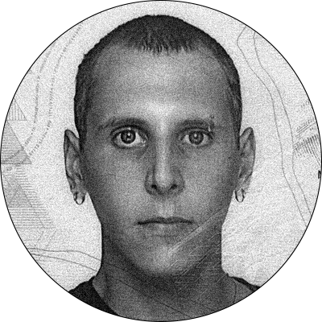
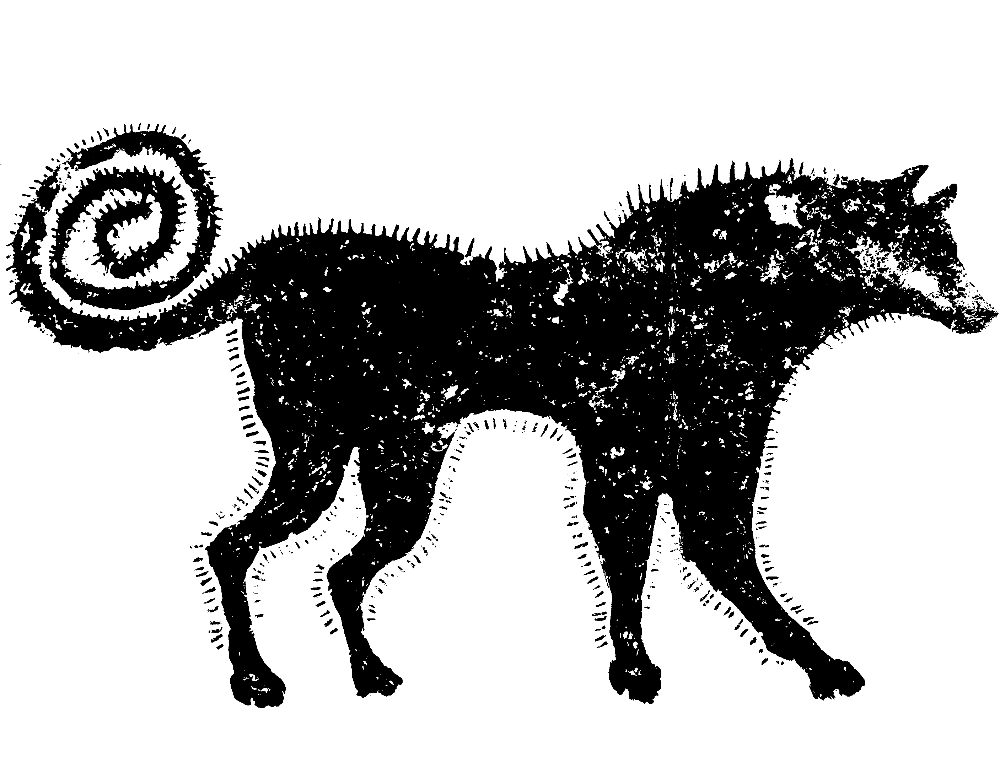

MULTIPLE DISCIPLINES
ONE COLLECTIVE
Serious about the work.
Not precious about
how we get there.
We are cave canem, a three-person multidisciplinary graphic design collective in Switzerland. Our practice moves between digital precision and handmade imperfection — from a linocut in a garage to a clean, unapologetic identity for a local museum. The medium changes. The curiosity stays.
We make identities, images and objects. The useful tension is between a clear structure and a mark that feels alive. Rather than choosing between the screen and the workbench, we keep moving between them.
01 / WHY WORK TOGETHER
Three minds. No relay race.
A small collective means a direct conversation with the people doing the work. Different disciplines, one shared table.
02 / WHY WORK TOGETHER
From ancient mosaics to everyday printed matter: we look for the logic behind a motif, then give it a different job.
03 / WHY WORK TOGETHER
An unruly first mark can become a rigorous visual system. We make room for both the expressive gesture and the useful detail.
THE PEOPLE / 01 + 02 + 03
01 / GRAPHIC DESIGN & PRINT
02 / GRAPHIC DESIGN & UX/UI

03 / GRAPHIC DESIGN & ARCHIVAL RESEARCH
DIFFERENT WAYS IN. A SHARED WAY THROUGH.
Context, language and historical references. Ask what a project needs before deciding what it should look like.
Get it out of your head.
Draw, cut, arrange and print. Give an idea a physical form so it can be questioned, compared and changed.
Type, rhythm, scale and rules. Turn a promising gesture into a language that can be used again.
From the first question to the final, very small detail.
Visual identities, custom lettering, guidelines, wayfinding
Books, publications, posters, printed matter
Web design, digital experiences, moving identities
Art direction, illustration, pattern, print experiments
Bring the question, the context and what is still uncertain. Together we frame the audience, the purpose and the practical boundaries.
References and early experiments make the conversation tangible. We compare directions by what they say, not only by how they look.
The chosen direction is developed across its intended formats. Image, type and material are tested as parts of the same system.
We refine the language and agree the files, guidelines and applications the project needs. The scope follows the work, not a fixed package.

FIG. A — THE WATCHDOG
AN OLD MOTIF, A NEW TEMPERAMENT.